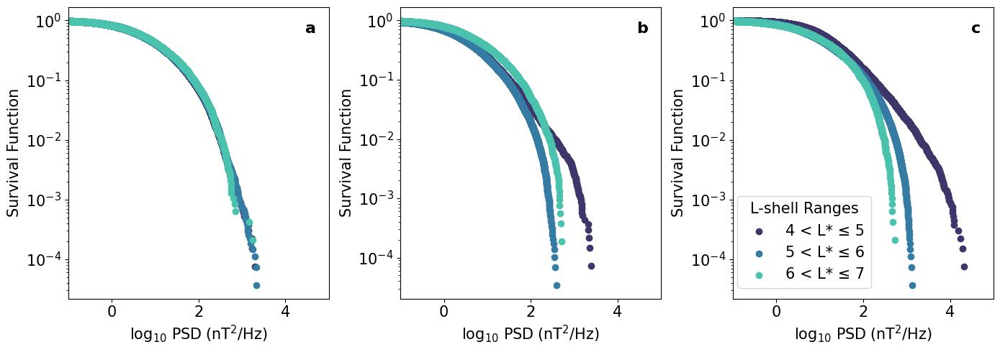
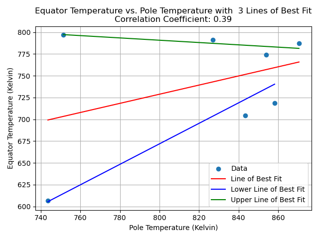
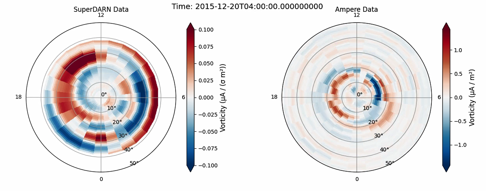

This is my highest-level research project, intended to mimic PhD life. This project is part of the Physics with Astrophysics Master's program and is graded against the level of a publishable academic paper.
In this project, I investigated Ultra Low Frequency (ULF) waves in the Earth's magnetosphere, with the aim to determine if they exhibit an
upper boundary in terms of wave power, as predicted by theory. This project involved extensive data analysis using Python, including data cleaning, statistical analysis, and visualisation.


This project was part of Physics with Astrophysics Master's program, was conducted as a final project in my Bachelor's (third year).
In this project, I analysed temperature variations in Jupiter's upper atmosphere using observational data. The project involved data processing, statistical analysis, and interpretation of results within the context of planetary science.

This project, was undertook through a research internship scheme under the supervision of Dr John Coxon. This project
involved the investigation of ionospheric voriticity using two sets of observational data. The project required data cleaning, statistical analysis, and visualisation using Python,
these skills were used to compare the two datasets and draw conclusions about ionospheric vorticity.

This mini project is designed to showcase my skills in SQL. This project involved data cleaning and exploratory data analysis of a dataset holding
layoff information from various companies. The project demonstrates my ability to write complex SQL queries to extract insights from the data.

This project was designed to showcase my skills using machine learning. In this mini project I utilise a Python library called TensorFlow, to forecast
the minimum daily temperature in Melbourne, Australia. The project involves data cleaning, feature engineering, model training, and evaluation.
This mini project was designed to showcase my skills at using Microsoft Power BI. This mini project involved the analysis of survey data collected from data professionals
in the data science and analytics industry. The project involves transforming raw data using Power Query and creating themed clear dashboards containing multiple visualisations.
This mini project was designed to showcase my skills at Microsoft Excel. This mini project involved the data cleaning and exploratory analysis of a dataset containing
information about bike sales from various companies. The project demonstrates my ability to use Excel functions and features to extract insights from the data.